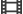

Настройки > Настройки системы > Резервная утилита
Резервная утилита
Создание резервной копии данных, сохраненных на жестком диске, на носителе или на устройстве-накопителе USB или восстановление данных из резервной копии.
| Создать резервную копию | Резервное копирование данных с жесткого диска в модуль памяти или запоминающее USB-устройство. |
|---|---|
| Восстановить | Восстановление данных жесткого диска с носителя, на который было произведено резервное копирование: с модуля памяти или запоминающего USB-устройство. |
| Удалить резервные данные | Удаление данных из резервной копии, сохраненной на носителе или устройстве-накопителе USB. |
Примечание
Невозможно сохранить сведения о своих призах с помощью функции резервного копирования. Для сохранения информации о призах создайте учетную запись PlayStation®Network и сохраните данные на сервере PlayStation®Network. Для сохранения сведений о призах на сервере PlayStation®Network, выберите  (Игра) >
(Игра) >  (Коллекция призов), нажмите кнопку
(Коллекция призов), нажмите кнопку  и выберите в меню параметров [Синхронизировать с сервером].
и выберите в меню параметров [Синхронизировать с сервером].
Подсказки
- Резервные копии данных можно создавать на устройствах Memory Stick™, SD Memory Card, CompactFlash® и устройствах-накопителях USB. При использовании носителя с некоторыми моделями требуется соответствующий адаптер USB (не входит в комплект поставки). Записываемые диски, например компакт-диски, использовать нельзя.
- Можно также создать резервную копию данных на жестком диске USB; если этот диск подключен, он отображается в виде значка
 . Следует учитывать, что диск распознается системой PS3™ только в том случае, если он отформатирован в файловой системе FAT32.
. Следует учитывать, что диск распознается системой PS3™ только в том случае, если он отформатирован в файловой системе FAT32. - Резервные копии данных будут сохраняться в папке [PS3] - [EXPORT] - [BACKUP]. Папки создаются автоматически.
- При изменении имени папки или файла с данными резервного копирования может оказаться невозможным восстановление этих данных.
- В случае выполнения одной из следующих операций после создания резервной копии корректное восстановление видеофайлов с защитой от нарушения авторских прав из резервной копии может стать невозможным.
- - Форматирование жесткого диска
- - Восстановление системы PS3™
- - Перемещение видеофайлов, защищенных авторским правом
- - Загрузка видеофайлов, защищенных авторским правом
- - Воспроизведение защищенного от копирования видео с ограничением времени первого просмотра
- Если вы выполните резервное копирование данных в системе PS3™, а затем перенесете данные в другую систему PS3™ с помощью утилиты переноса данных, то защищенные от копирования сохраненные данные, в том числе и резервную копию данных, невозможно будет восстановить ни на одной из систем.
- Некоторые типы данных в резервных копиях могут быть восстановлены в другой системе PS3™. В другой системе могут быть восстановлены следующие типы данных.
- - Сохраненные данные из программного обеспечения формата PlayStation®3 *1
- - Файлы изображений в категории
 (Фото)
(Фото) - - Музыкальные файлы в категории
 (Музыка) *2
(Музыка) *2 - - Видеофайлы в категории

(Видео) *2 - - Закладки, добавляемые в разделе
 (Веб-браузер)
(Веб-браузер) - - Термины, добавленные с помощью
 (Настройки) >
(Настройки) >  (Настройки системы) > [Добавить/Изменить термин], или предикативные термины, которые были введены с помощью экранной клавиатуры
(Настройки системы) > [Добавить/Изменить термин], или предикативные термины, которые были введены с помощью экранной клавиатуры - В некоторых случаях не удастся воспользоваться функцией "Резервная утилита" для создания резервной копии или правильного восстановления системы. Рекомендуется всегда копировать и перемещать важные данные на носитель для создания независимой резервной копии данных.
| *1 | Данные, защищенные от копирования, не могут быть восстановлены. Сохраненные данные, которые были восстановлены, возможно, не удастся использовать в некоторых играх. |
|---|---|
| *2 | За исключением данных, защищенных авторским правом. |